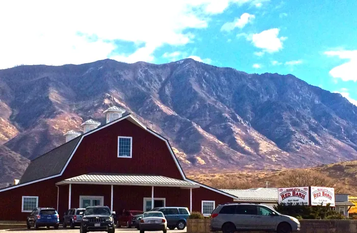

About Santaquin
Santaquin's Population: 13,725 (Bing)
Incorporation Date: January 4, 1932 ("Santaquin, Utah")
Region of Utah Santaquin is Located: Central region
Classification of Santaquin (urban, suburban, and/or rural): Suburban
Santaquin's Average Income Level vs. Utah's Average
| Santaquin's Average |
Utah's Average |
| $80,057 ("Santaquin Demographics") |
$59,904 (Herrity) |

Best place to visit in Santaquin: The Rowley's Red Barn
Things to do in Santaquin throughout the year
| Summer |
Fall |
Winter |
Spring |
| Swimming |
Corn Mazes |
Sledding |
Gardening |
| Paddle Boarding |
Canyon Drives |
Snow Shoeing |
Horseback Riding |
| Camping |
Pumpkin Carving |
Snowball Fights |
The Parade |
| Hiking |
Mountain Biking |
Caroling |
Fishing |
References
- Bing, April 1 2020, www.bing.com
- "Santaquin, Utah", Wikipedia, May 9 2023, en.wikipedia.org
- "Santaquin Demopgraphics", worldpopulationreview, May 9 2023, worldpopulationreview.com
- Herrity, Jennifer. “Average Salary in the US .” Indeed, 16 Feb. 2023, www.indeed.com